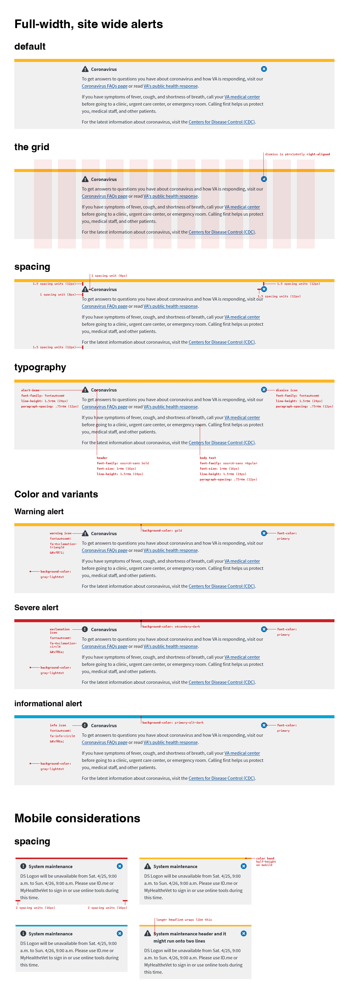
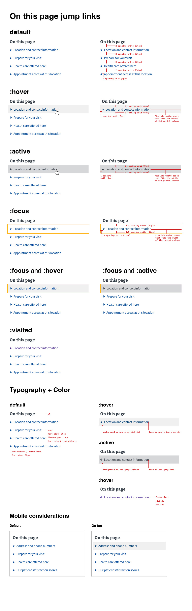

All projects
All projects
VA Design System
The problem
When I detailed to VA via USDS in early 2018, the VA design system was in its nacent stages. While it borrowed its styles and framework from an older version of the USWDS U.S. Web Design System, it had limited components and was not widely adopted by the VA as an organization. It also lacked comprehensive documentation and was difficult for users (typically government contractors) to contribute to the design system.
The solution
Our mission was to expand the VA.gov design system so that users could easily and quickly deliver digital services to Veterans. We accomplished this by adding new components as needed, vetting them by the design system team for proper accessibilty. We made it easier for teams to work with and contribute to the design system by implemention language-agnostic web components and creating a contribution process (which has evolved into the maturity scale).
My role
As design lead of VA.gov as a platform, my role on the design system team was to review proposals of new components, which includes documentation on how they are used, what data do we have that justifies a new component or pattern, etc, design new components and patterns from scratch to expand the system.
Example: proposed component and guidance for downtime maintenance alerts
Example: proposed component and guidance for anchor links
All projects